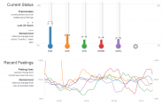

Welcome to my portfolio of research, programming, design, and random projects. Click on a project for details.
Portfolio
2014
Feature Ideation
Visual support for building text classification features
MSR internship project, 2014
In machine learning, features are how the machine represents and understands the data. In general, features are thought to be one of the most important factors in building a successful machine learning system. However, there is very little support available to help with thinking of good features. In this internship project at Microsoft Research with Saleema Amershi, Bongshin Lee, Steven Drucker, Ashish Kapoor, and Patrice Simard, we explored an approach to feature ideation based on visual summaries of sets of misclassified data.
We designed and built a tool, FeatureInsight, which helps the user explore web pages misclassified by a text classifier and interactively build new features out of sets of related words. We ran an experiment to evaluate the effects of two general strategies for feature ideation implemented in FeatureInsight, finding that visual summaries were helpful for building better classifiers.
Collaborative Exploration
Collaborative visual exploration of sentiment in tweets
Research project, paper, software, 2014
Social media platforms are an increasingly important source of data for social science research about individuals and groups. However, the size and complexity of social media data sets challenge traditional research methods. With other researchers in the Scientific Collaboration and Creativity Lab, I designed, developed, and evaluated Agave, a tool enabling a group of researchers to explore and analyze a large set of tweets.
Using Agave, researchers can compare and contrast multiple searches and filters, and get an overview of changes in tweet rate over time with details about the top tweets. Agave also shows the breakdown of tweets by sentiment (positive, neutral, or negative), and Agave supports collaboration through annotations and discussion posts that are linked to the data. Social interactions in Agave made it easier for researchers to "jump in" to explore an unfamiliar data set. Our main findings were published in a paper at CDVE 2014.

Twitter Thermometer
Visualization of feelings from the Twitter stream
Visualization class project, software, 2014
Social media or visualization enthusiasts might be familiar with We Feel Fine, an online art project developed by Jonathan Harris and Sep Kamvar which extracts emotion keywords in real time from blogs, microblogs, and social networking sites and presents the results in a variety of aesthetically and emotionally appealing visualizations. For the final project in HCDE's Advanced Topics in Information Visualization class, Taylor Scott and I designed and implemented our own visualization of feelings on Twitter.
Our goal in this project was to retain some of the aesthetic appeal of We Feel Fine, but to present the data in a more understandable way. Drawing on the association between feelings and temperatures, we explored the idea of "taking the temperature" of Twitter to create a "Twitter Thermometer" that visualizes momentary deviations from normal levels for a range of feeling words, with measurements updating as tweets are posted.
D3 Tutorial
D3 Tutorial
In-class workshop, 2014-2015
D3 is a popular JavaScript library for creating web-based data visualizations, but it is notoriously difficult to learn. After struggling over the hurdles of learning D3 myself in 2012, I helped lead, with colleague John Robinson, a small group of other students through an introduction to D3 over the course of about 6 weeks. Some of the students in this workshop had never programmed in JavaScript before; helping others understand how D3 works and why it is useful was an important learning experience for me.
The following quarter, we were invited to deliver an in-class workshop to Professor Cecilia Aragon's masters-level visualization class. Giving 50 students with varied backgrounds a meaningful introduction to D3 in only two hours was a formidable challenge, but the feedback was very positive. Since then, we have returned twice to HCDE's masters and undergraduate visualization classes and translated our original teaching materials from PowerPoint to the web with many improvements based on student feedback.
2013
Clustered Grading
Clustered short-answer grading for MOOCs
MSR internship project & paper, 2013
In massive online courses, assessment is a major challenge, and many such courses rely on multiple choice questions because they are easy to grade. However, open-ended forms of assessment, like short answers or essays, have greater value to students and teachers. In this internship project at Microsoft Research with Sumit Basu, Lucy Vanderwende, and Chuck Jacobs, we developed a cluster-based interface for reading, grading, and giving feedback on large groups of similar answers at once.
In an online evaluation with 25 teachers, we compared our cluster-based prototype to an unclustered baseline, and found that the clustered interface allowed teachers to grade faster, give more feedback, and develop a high-level view of student's misunderstandings. We published our research at ACM Learning at Scale 2014.
Hoptree Navigation
Hoptree visual hierarchy navigation system
Research project, software, & paper 2013
Do you ever forget where you are in your file system, or while using a complicated multi-page website? Hierarchical information structures are ubiquitous and important in business, research, and everyday life.
Hoptrees are a visual navigation interface I developed in collaboration with Jevin West, Carl Bergstrom, and Cecilia Aragon. Hoptrees make it easier for people to keep track of where they are and where they’ve been when navigating hierarchical information. For example, they could help you avoid getting lost in your file system, or on a complex hierarchical website. Check out our demo and source code!
Language Learning
Qualitative study of communication in language classrooms
Research project, paper 2013
The potential benefits of computational tools for people learning other languages has been studied extensively over the past 50 years. However, in most language classrooms, technology adoption is minimal. Additionally, many new technologies like tablet computers have not been as extensively studied by researchers in the field of Computer Assisted Language Learning.
As part of my Qualitative Research Methods course, two other students and I observed meetings of an introductory Russian class and interviewed several of the students. We analyzed the observational and interview data, constructing a grounded theory of artifact use and student interactions in introductory language classes. Because students in the class very often practiced scripted dialogs out of the textbook, we believe that there is potential for new mobile technologies to support more dynamic, natural language practice in the classroom. We published our findings at CHI 2013 in Paris, with honorable mention for best paper.
2012
Affect Detection
Affect detection in chat messages
Research project, software, paper 2012
Affect and emotion are important in group communications and cooperative work, but the role of affect in computer supported cooperative work is rarely studied. Moreover, analysis of emotion beyond a superficial level typically requires painstaking human interpretation, which is expensive and slow.
I have worked with Cecilia Aragon's research group on emotion in text communication to develop machine learning tools to identify a variety of flavors of affect and emotion in large text communication data sets, such as logs of chat conversations. We are especially interested in how message context and textual features of chat messages can be leveraged for affect classification. A paper explaining our process and findings has been accepted at CSCW 2013, and we have open sourced ALOE, an implementation of the techniques we have developed.

Usable Biometrics
Design and evaluation of an eye tracking biometric system
Research project, paper 2013
Most people use passwords many times each day, despite severe usability problems. It is hard to remember strong passwords, and writing down or re-using passwords compromises security. Given how many passwords people need these days, finding alternative security mechanisms is a priority.
Advised by Cecilia Aragon, I led the user-centered design, development, and evaluation of a novel biometric authentication technology that uses an eye tracker to identify individuals based on unique features of people's eye movements. I used an iterative design process involving paper prototypes and working prototypes that use a Tobii eye tracker to record gaze data. I ran a usability evaluation to understand the usability of the system relative to a standard PIN authentication system. We published our results at ICB 2013.
2011
Interactive Nielsen
A simulated interview with Jakob Nielsen
Class project, 2011
In my Information Design class, the final project involved converting a single expository document into four variations, each using different media or formatting. I selected a column from web usability expert Jakob Nielsen's Alertbox. For one of my variations I decided to create a website where visitors can interact with Mr. Nielsen through a chat interface.
The website responds to natural language questions based on a corpus created from all of Nielsen's Alertboxes, 1995 to 2011. Based on the query text, the website (written in PHP) ranks all of the relevant paragraphs in the corpus and selects the best one. The ranking is calculated using a variant of tf-idf after the text is tokenized and stemmed. A vector of recent conversation topics is also retained from question to question, so that continuity might be maintained. Check out the working demo!
Chat Visualization
Visualization tool for long chat logs
Visualization tool, Fall 2011
My research group needs to be able to read and analyze an extremely large data set of chat logs. The raw log files list each message including timestamps, speakers, and the messages themselves. Reading the log files requires a lot of effort because it is hard to see the timing of specific messages in the log.
I built a Java application that parses the log files and presents them in a format that is easier to understand. This includes a visual overview of chat activity in the entire log, spacing the messages out according to how much time passed between messages, and tracing who is talking through color coding. I plan to release the code for this program soon so that other people examining large chat logs could benefit from it as well.

Portfolio Manager
A content management system for portfolios
Personal project, Fall 2011
You're looking at it! Partly as a way to put my own portfolio online and partly to create a simple but extensible platform for other types of content, I designed and built this Portfolio content management system.
The software allows content creators to create and edit portfolio items through a management interface. Images, HTML, links, tags, and custom fields can be attached to items. Users can customize the core software in a style similar to WordPress, creating a unique display format and style. In working on this project, I greatly improved my skills with JavaScript and CSS, particularly the jQuery library and several of its plugins.
2010
Music Visualization
A real-time visualization tool for musicians
Undergraduate thesis project, 2010
Playing music is an intense cognitive and expressive task. It involves reading and interpreting music notation, planning the production of music, controlling the instrument (or voice) to produce the desired sound, and listening closely to help correct problems as they occur. This can make playing music frustrating, especially for beginning musicians. As a result, many musicians struggle with staying motivated, and many eventually quit.
As a long-time piano and flute student, I believe that music visualization tools could make practicing more fun, rewarding, and efficient, especially for beginners. For my undergraduate thesis project at Oberlin, I researched audio-processing techniques and created several working prototype visualizations. Taking advantage of the readily available musical talent at Oberlin, I collected feedback on the visualizations. The feedback was enthusiastic, but highlighted the need for further work and perhaps a participatory design process. More information is available on the project website.
Robotics & Vision
Robotic vision and manipulation demo
Software development internship, Summer 2010
RE2 is a robotics research and development company located in Pittsburgh, PA, that specializes in robotic manipulation technologies for public safety and defense. DARPA selected RE2 to lead the Autonomous Robotic Manipulator (ARM) research program, which involved the development of a two-armed, humanoid robotic platform equipped with a range of sensors. The robot is intended to be used by manipulation researchers and hobbyists around the country. More information is available at the program website.
I had the opportunity to intern with the software development team at RE2 during the final months of development. With another intern, my primary task was to devise and implement a demonstration program that would show off the robot's capabilities at the program launch. We programmed the robot to autonomously locate a "pattern block" on the table in front of it, lift the block to its face, read a pattern off of the block, and then replicate the pattern with its other hand using the remaining blocks on the table. A video of the robot performing the routine is on YouTube.

Health Journaling

Journaling developmental milestones for health
Research project, 2011
Pediatricians recommend that parents record milestones in their children's growth and development and bring reports to their appointments so that the doctor can check for developmental conditions like autism. However, parents are currently given a paper worksheet to record these milestones on, and many parents forget to keep it up to date until right before their appointment. As a result, the accuracy of the information is limited.
Professor Kientz has been studying ways of using a computer-based multimedia journal, called Baby Steps, to help make tracking this data more fun and rewarding for parents. I designed and implemented a new version of the Baby Steps system as a web application. The system will also have SMS and Twitter interfaces, making it more accessible to lower-income families who may not own a computer.
Open-ended Chess
More flexible computer chess came
Class project, Spring 2010
When you play a physical board game, the only rule that really prevents you from cheating is an understanding between you and your opponent. While this might sometimes result in breakdowns, it also means that players can agree to bend the rules if they want. In fact, some games are only fun at all when you bend the rules or invent variations (like Monopoly, in my opinion).
However, most computerized board games are very restrictive; cheating is usually literally impossible. For my final project in my Network Systems class, a partner and I decided to create an open-ended chess-style game. Players can arrange and move any of the chess pieces wherever they wish. Even turn taking is not strictly enforced. A usable undo mechanism and a prominent chat feature enables players to communicate and construct the rules of their game.
2009
Optimal Clustering
Using integer programming to cluster data
Class project, Fall 2009
Clustering is helpful for understanding complex data sets. Many common clustering algorithms run quickly and can easily adapt to new data, but perform poorly when the number of dimensions is very large. Sometimes they also use questionable heuristics and assumptions when forming clusters.
A clustering algorithm using integer programming was discussed in a class on mathematical optimization problems that I took in Fall 2009. This approach scales well to high-dimensional data and offers an "optimal" clustering. However, it is complex to set up and can take a long time to run. With another student, I extended the integer programming-based clustering algorithm and created a web application that used the open source package LPSolve to let people easily use this technique to cluster their data.
Database Browser
Web-based music database browser
Class project, Spring 2009
As a classical musician, I've always been unsatisfied by the way most music players and music library tools do not support classical music as well as they support other genres. For example, the concepts of composers, performers, and pieces that are vital in classical music do not map well onto the categories featured by most music players: artists, albums, and songs.
For my final project in my Database Systems class, I decided to see if I could create a data model that better matched my understanding of classical music. In completing this project, I dramatically improved my web development skills: I used AJAX to enable smooth interactions with the website, and learned a lot about CSS, PHP, and SQL.
Puzzle Game
Computer version of the puzzle game IZZI
Personal project, Summer 2009
IZZI is a puzzle game by ThinkFun, Inc. The game includes 64 tiles, each containing a unique black-and-white pattern. The object of the game is to arrange the tiles into a single 8-by-8 square such that the colors on the edges of all adjacent tiles match up. While it is easy to get a nearly correct arrangement, getting those last few tiles in place is much harder.
I found IZZI particularly interesting because I had just taken a Group Theory class when I discovered the game (see an application of Burnside's Lemma to find the number of possible IZZI tiles, allowing rotations). Because I had been learning the XNA framework in preparation for being a TA in a game design course, I decided to implement a version of IZZI on the computer. The feel of manipulating the tiles is so important, so I spent a lot of time making the tile operations smooth and enjoyable.
Clavichord Building
Building clavichords for Oberlin's Conservatory of Music
Winter Term project, 2009
The clavichord is an early keyboard instrument developed in the 14th century that, like the modern piano, works by striking strings with tiny hammers. Oberlin's Historical Performance department and its staff of skilled piano technicians offered a Winter Term class where participants worked in pairs to build a set of clavichords from kits.
Because I had just finished the first in a series of two piano technology classes, I was excited to spend January carefully cutting, sanding, gluing, and stringing the 45-key instrument. It was a lot of work to get everything assembled within the 4-week class, but now the instrument I built lives in one of Oberlin's practice rooms where students can experience the clavichord's unusual sound.
≤ 2008
Game Physics
Real-time physics simulation for video games
Winter Term project, 2008
I've always enjoyed video games that had a strong physics component. After taking a bunch of physics classes in college, I wanted to know how the sophisticated physics engines in modern video games really worked. As a Winter Term project at Oberlin, I read about 2D and 3D physics engines. I worked through much of David Eberly's Game Physics and other literature on real-time physics simulation.
As I learned how to model physical objects, numerically integrate equations of motion, detect collisions, and respond to collisions, I combined these techniques in a demo physics engine (pictured) written in C# and the XNA framework. I also contributed to an open-source .Net wrapper for the (then) Ageia PhysX library.
Incubator Design
Designing an infant incubator for developing countries
Internship, Summer 2007
Infant incubators can greatly increase the chances of survival for premature or unwell babies. However, standard infant incubators are expensive, complex, and delicate, making them unsuited for use in developing countries.
With engineers and designers at Tackle Design, I researched potential solutions to this problem. With the aim of increasing durability and simplicity but keeping cost down, we considered alternative heat sources, temperature regulation mechanisms, and form factors. We created low-fidelity prototypes to help assess the pros and cons of different options. Our findings are collected on a wiki.
Social Networks
Game theoretic models of social networks formation
Research project, Summer 2008
As described by Ronald Burt, social networks tend to have "structural holes," or gaps that can be filled by a single strategic connection. The individual that connects two separated cliques becomes influential because of their role in mediating communication between the two groups.
With a team of students and faculty, I investigated whether or not this structure could be explained using a model of social network formation that drew on game theory. Treating each potential connection between people as a game where both players sought to maximize individual utility, we simulated the development of many types of social networks. Our simulation program and results are available on Google Code.
Topics
Qualitative Methods
Machine Learning
Clustering
Visualization
Security
Language
Languages
JavaScript
Python
PHP
C#
Java
Contact me: mjbrooks@uw.edu
Site last updated October 29, 2015; Content last updated October 23, 2014